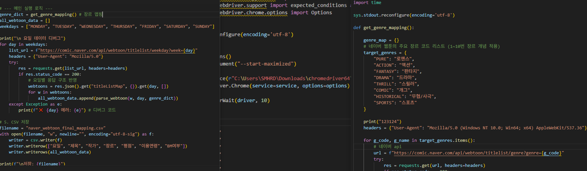
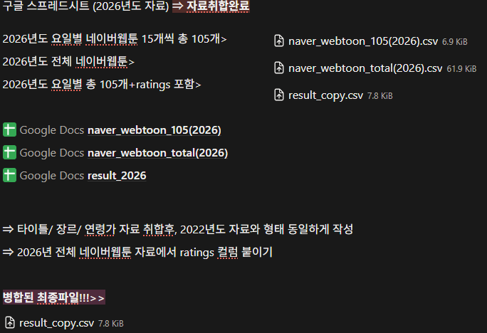
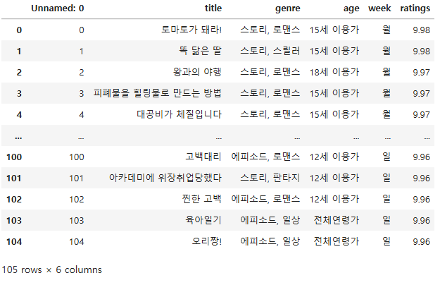

EP3. 데이터를 요리하는 정교한 레시피
(전처리 및 분석 프로세스)
데이터 수집
이번 분석은 2022년의 기록과 2026 네이버 최신 웹툰 데이터를 꼼꼼히 대조하며 진행했습니다.
- ✔ 네이버 API 기반 수집
- ✔ Selenium 크롤링으로 데이터 보완
- ✔ 연도별 데이터 맵핑 및 통합

데이터 전처리 및 분석 설계
서로 다른 시기의 데이터를 정확하게 비교할 수 있도록, 지저분한 부분은 덜어내고 구조를 탄탄하게 맞추는 과정을 거쳤습니다.
- ✔ 핵심 컬럼 선별 (title, genre, age, ratings)
- ✔ 평점 기준 내림차순 정렬 후 상위 추출
- ✔ 2026 웹툰 크롤링 데이터와 Merge 수행
- ✔ 누락된 평점을 보완하고, 제목의 오타를 깔끔하게 바로잡기
최종 분석 데이터 구조
정성껏 다듬어진 데이터셋은 이제 웹툰 소비 패턴의 비밀을 풀어낼 완벽한 준비를 마쳤습니다.
- ✔ 장르 트렌드 변화 분석 | ✔ 요일별 인기 작품 분포 비교
- ✔ 평점 데이터를 통한 콘텐츠 만족도 분석 | ✔ 상위 랭킹 작품 패턴 도출

